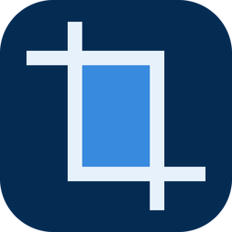

開闢
撮りためたスクショをカードにしよう
カード1枚だけを切り抜く
マスターデュエルの拡大画面を撮るだけで、カードのイラストを自動で切り抜き、カード名を付けて保存します。

詳細画面にも対応
デッキ編集などで開くカード詳細画面からも切り抜けます。たくさん撮ったスクショは、フォルダごとドロップしてまとめて処理できます。


撮りためたスクショをカードにしよう
マスターデュエルの拡大画面を撮るだけで、カードのイラストを自動で切り抜き、カード名を付けて保存します。
デッキ編集などで開くカード詳細画面からも切り抜けます。たくさん撮ったスクショは、フォルダごとドロップしてまとめて処理できます。